Tag, scan and track every piece of equipment – right from your phone.
Asset Tagger is a field app for mechanical contractors, commissioning agents and facility managers. Record nameplate data, print QR labels, track filters and belts, see what feeds what and hand it all over in Excel. It works in the mechanical room with no signal.
The demo opens the real app loaded with a sample medical office building. Nothing to install, no sign-up.
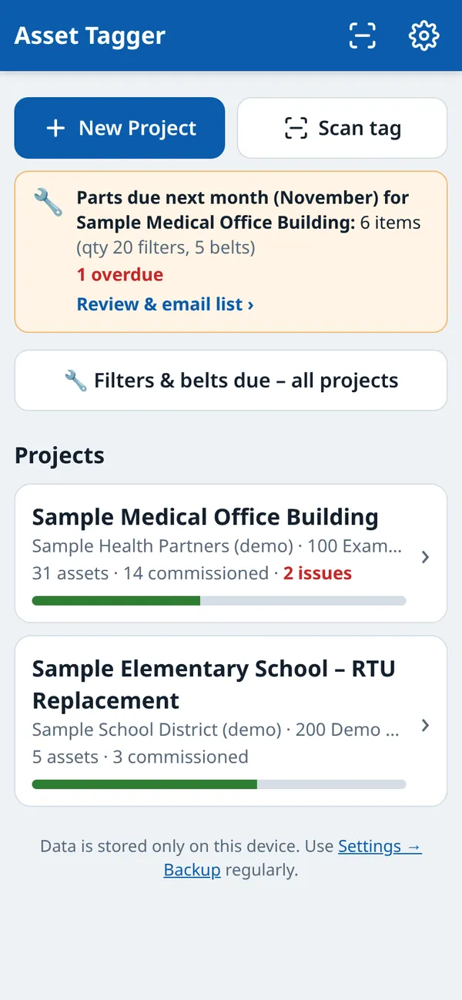
One app for the whole equipment list
From the first tag on the job to turnover and years of service after – the same record, kept on the phone in your pocket.
Mechanical contractors
Tag equipment as it’s set, track installed and started-up units, print labels and send the equipment list to the GC or owner in Excel.
Commissioning agents
See progress and open issues by unit, record what feeds what and what controls it, and export a clean equipment list for the Cx report.
Facility managers
Scan a label to pull up a unit, know which equipment is near end of life, plan shutdowns by panel and order filters and belts on time.
Every job site, and how far along it is
Set up a project for each building or job. The home screen shows how many units are tagged, how many are commissioned and which ones have open issues, so you know where the job stands before you walk in.
- Progress bar per project, based on units commissioned
- Issue count in red so problem units don’t get lost
- Status on every unit: Not started, Installed, Started up, Commissioned, Issue
- Parts-due reminder shows up on the home screen the month before
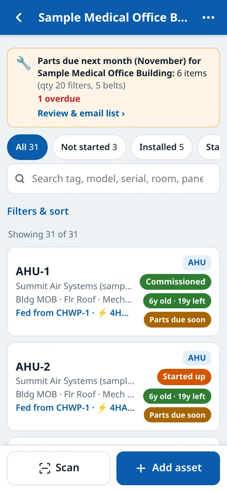
Screens show the built-in sample data.
A complete record for every unit, built on your phone
Tag, type, make, model, serial, capacity, building, floor, room and area served – all in one place, with nameplate photos taken right from the phone. Fewer trips back to the truck to copy data off a nameplate.
- Type is filled in from the tag – type VAV-3-6 and it picks VAV
- Save & next carries the make, model and location to the next unit and bumps the tag number
- Nameplate photos stored with the unit
- Notes for deficiencies, punch items and follow-ups
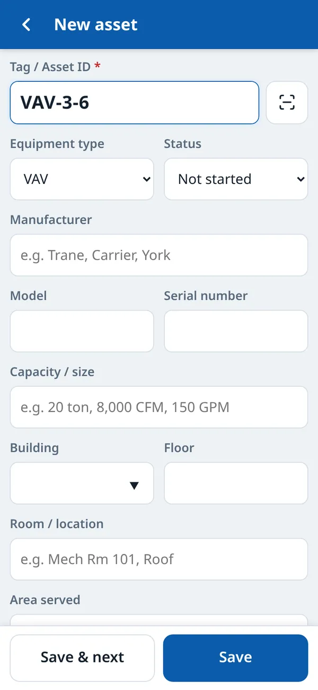
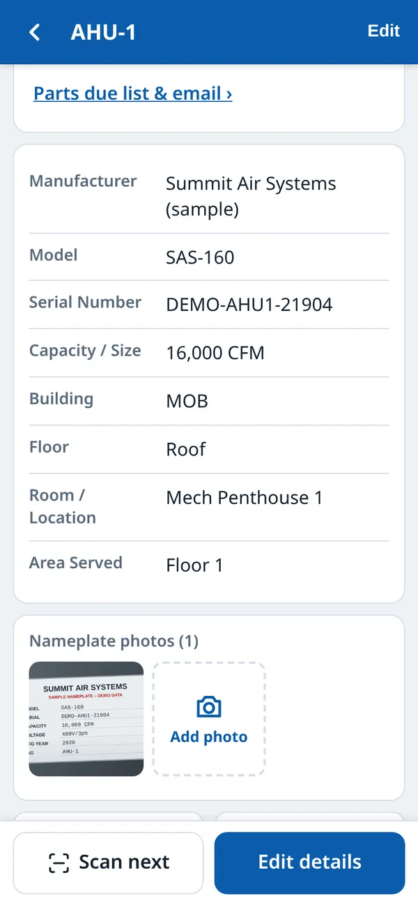
Point the camera at a tag, get the unit
Scan a QR label or a barcode with the phone camera and the right unit opens. No signal? Scan from a photo instead, or just type the tag. If a tag isn’t in the project yet, the app offers to add it.
- Live camera scanning or scan from a photo
- Reads QR codes and common barcodes (Code 128, Code 39, Data Matrix, UPC and more)
- Unknown tag? Start a new record with that tag already filled in
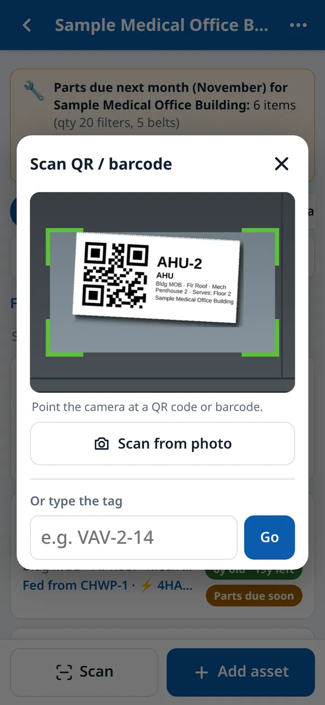
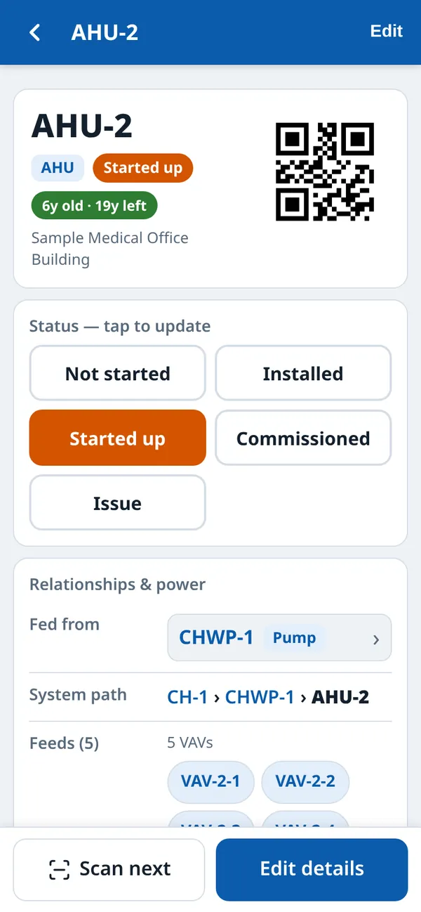
Print the tags you stick on the equipment
Print QR labels for a whole project or a filtered list – just the AHUs, just one floor. Each label shows the tag, type and location in plain text too, so it’s still useful to someone without the app.
- Small 2×1″, medium 3×1.5″ or large 4×2″ labels
- Print to a label printer or to letter paper and cut, or save as PDF
- QR can hold the tag ID only, or a link that opens the unit in the app from any phone camera
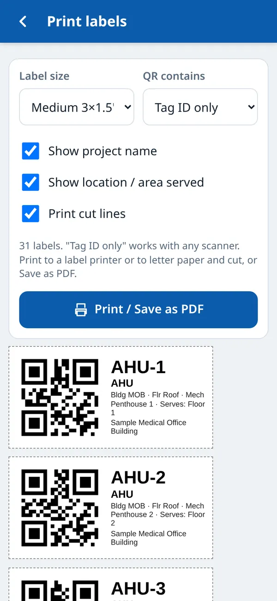
See which equipment is near the end of its life
Enter the install or manufacture year and the app works out the age and the years left, using typical service-life values for each equipment type (all editable). Units past their expected life turn red – handy for capital planning and for owner conversations.
- Age updates on its own every year
- Default life expectancy by type: chillers 25 years, RTUs 15, pumps 20 and so on
- Green / amber / red at a glance in lists and on each unit
- Age and remaining life included in the Excel export
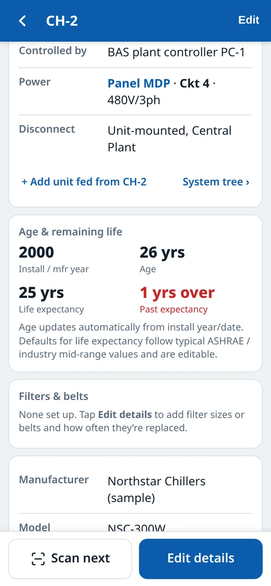
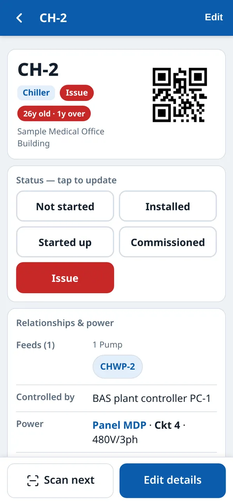
Know what to order before service day
Add filter sizes and belts to each unit with how often they get changed. The Parts due screen adds it all up into one order list for the month, flags anything overdue, and fills in an email to your customer or contractor.
- Next due date worked out from the last change and the frequency
- Order totals by size – “16 × 24x24x2 MERV 8” instead of a list of units
- Email the list from your mail app, or download it as Excel
- Tap ✓ Replaced and the next due date moves forward
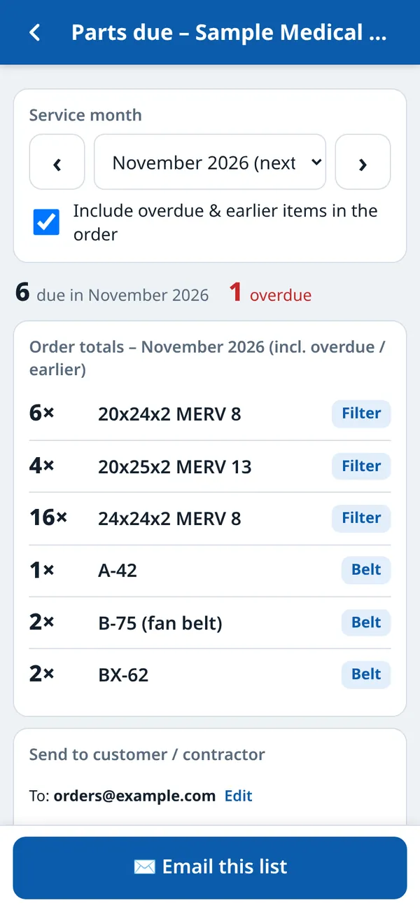
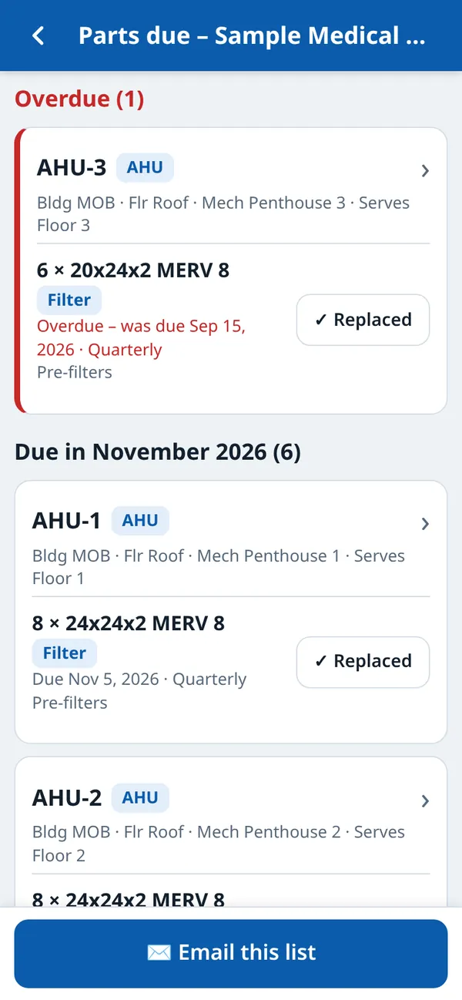
What feeds what – without digging through drawings
Record what each unit is fed from and controlled by. The app builds the reverse list (what it feeds) and a system tree for the whole plant: chillers to pumps to air handlers to VAV boxes.
- Fed from and Controlled by on every unit
- “Feeds” list built for you – AHU-2 feeds 5 VAVs
- System tree view you can fold and unfold
- Rename a tag and the links follow it
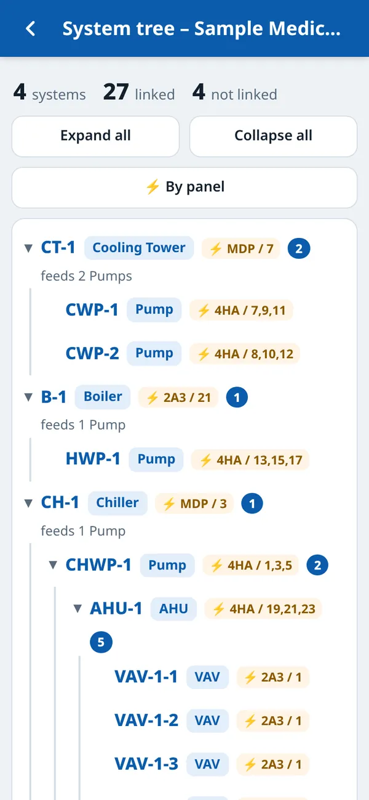
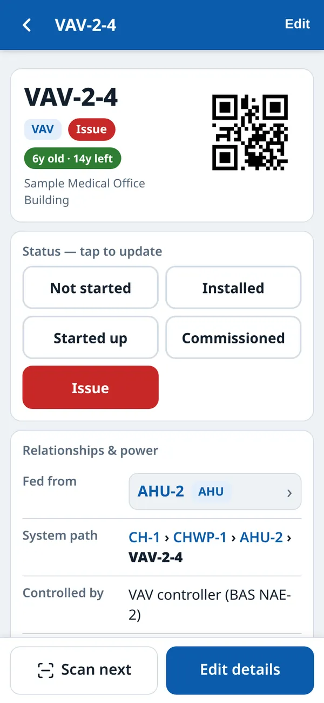
Plan a shutdown: see everything on a panel
Record the power panel, breaker or circuit, voltage and disconnect location for each unit. The By panel view lists everything on panel 2A3 or 4HA, sorted by circuit – useful for planning shutdowns and lockout/tagout walk-downs.
- Panel, breaker / circuit, voltage / phase and disconnect location
- Everything on a panel in circuit order, printable
- Shows what each unit feeds, so you know what else goes down
- Always verify in the field before LOTO – the app is a planning aid
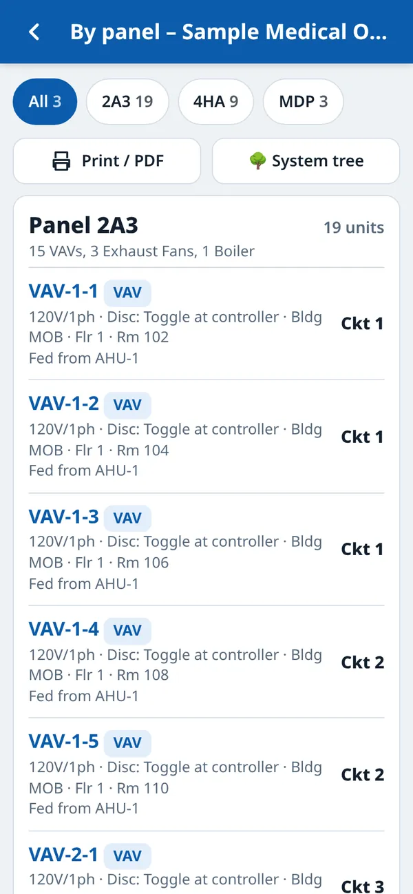
Find any unit in seconds
Search by tag, model, serial, room, panel or filter size. Filter by status, type, building, floor, power panel or upstream unit – for example, every open issue, or everything fed from AHU-1.
- Status chips with counts – one tap shows all Issues
- Filters for type, building, floor, panel and fed-from
- Print labels or export just the filtered list
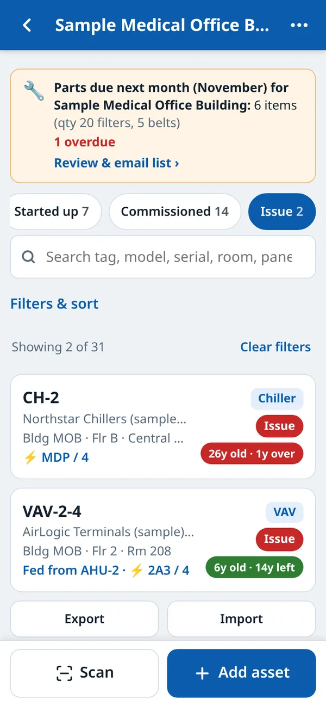
Hand it over in a spreadsheet
Export the whole project to Excel with an Assets sheet and a Parts sheet, ready for turnover, O&M binders or loading into a maintenance system. Already have an equipment schedule? Import it from Excel or CSV and start tagging.
- Excel (.xlsx) with Assets and Parts sheets, or CSV
- Includes relationships, power, age and remaining life
- Import from Excel/CSV – column names are matched automatically, with a preview before anything changes
- Full JSON backup and restore, including photos
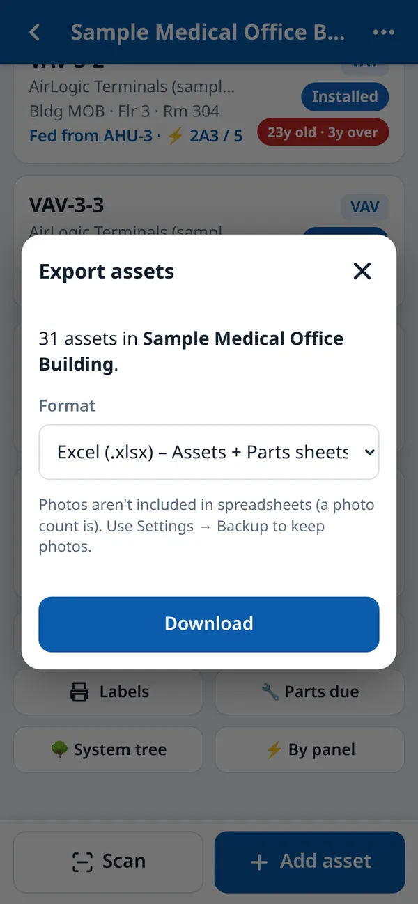
Built for basements and mechanical rooms
Once it’s opened, the app keeps working with no signal. Add it to your home screen and it opens full-screen like any other app. There’s no account to set up and nothing to sync.
- Works with no signal once it has been opened
- Add to home screen on iPhone and Android
- Data stays on your device – back it up to a file whenever you like
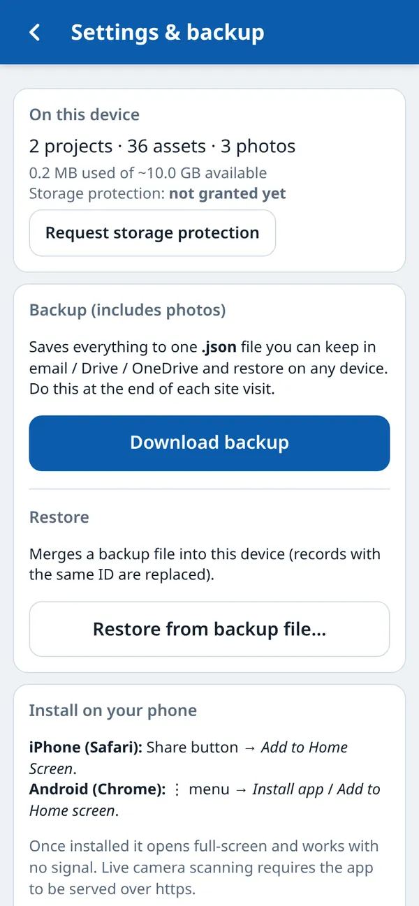
Five steps, one phone
A typical walk-down with Asset Tagger.
Tag
Create a project for the building. Add each unit by tag – or import the equipment schedule – then print QR labels and stick them on.
Scan
On every visit after that, scan the label to open the unit. No searching through a spreadsheet on a ladder.
Record
Update the status, snap the nameplate, note issues, and fill in what it’s fed from and which panel and breaker power it.
Track parts
Add filter sizes and belts with how often they’re changed. Each month you get one order list to email to whoever buys them.
Export
Send the whole list to Excel for turnover, O&M or your maintenance system, and keep a full backup file with photos.
Common questions
Does it work without cell signal or Wi-Fi?
Yes. After the app has been opened once, it keeps working offline – in basements, penthouses and plant rooms. Add it to your home screen and it opens like a normal app. Live camera scanning needs the app opened over https (it is, on the normal link); scanning from a photo and typing a tag always work.
Where is my data stored? Who can see it?
Your projects, equipment and photos are saved in the browser on your own phone or computer. There is no account and nothing is uploaded to a server. To move data to another device or keep a safe copy, use Settings → Backup to save a file, and Restore on the other device.
Can I get the data into Excel?
Yes. Export a project to Excel (.xlsx) with an Assets sheet and a Parts (filters & belts) sheet, or to CSV. You can also import an existing equipment schedule from Excel or CSV – the app matches the columns and shows a preview before anything is changed.
Do I need to install anything or create an account?
No. It runs in the phone’s browser (Safari on iPhone, Chrome on Android) or on a laptop. “Add to Home Screen” is optional and just makes it open full-screen.
What labels and scanners does it work with?
It prints QR labels in three sizes (2×1″, 3×1.5″ and 4×2″) to a label printer or plain letter paper, or saves them as PDF. The scanner uses the phone camera and reads QR codes and common barcodes, so existing barcode tags can be used too.
Can a whole team share one project?
Each device keeps its own data – there’s no live syncing. Teams share by exporting to Excel or passing a backup file, which can be restored on another device.
Is the demo real data? Will it mess up my own projects?
The demo is a made-up medical office building with made-up makes, models and serial numbers. It runs in a separate demo space on your device, so it never mixes with your own projects. Use Reset demo to start it over, or Exit demo to go back to your own data.
See it with a full equipment list
Open the demo and click around a sample chiller plant: 31 units, two open issues, filters due next month and power panels ready for a shutdown plan.